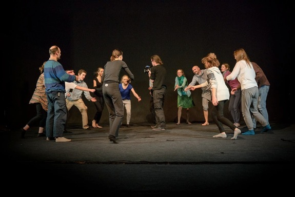

copyright by Jan Lubicz Przyluski - All Rights Reserved

PRZEISTACZANIE
2016
(jako performer z kamerą)
opis:
Eksperyment teatralno-performatywny "Przeistaczanie"/ Teatr TrzyRzecze / taniec, baśń, spotkanie - mity i legendy wchodzących w dorosłość. pełen opis: https://www.facebook.com/Przeistaczanie-956362387755300/
idea, prowadzenie, scenariusz: Maria Czykwin, Aleksandra Ostrowska.

Jan jako spontaniczny cameraman-performer w finałowej scenie “Przeistaczania”


(od lewej górnej: Maria Czykwin, uczestnicy: Paweł Ferdek i nn, Aleksandra Ostrowska i dwoje uczesników, NN, JLP spogląda do kamery, tańczący podczas sesji warsztatowej prowadzonej przez Tomka Wirackiego.